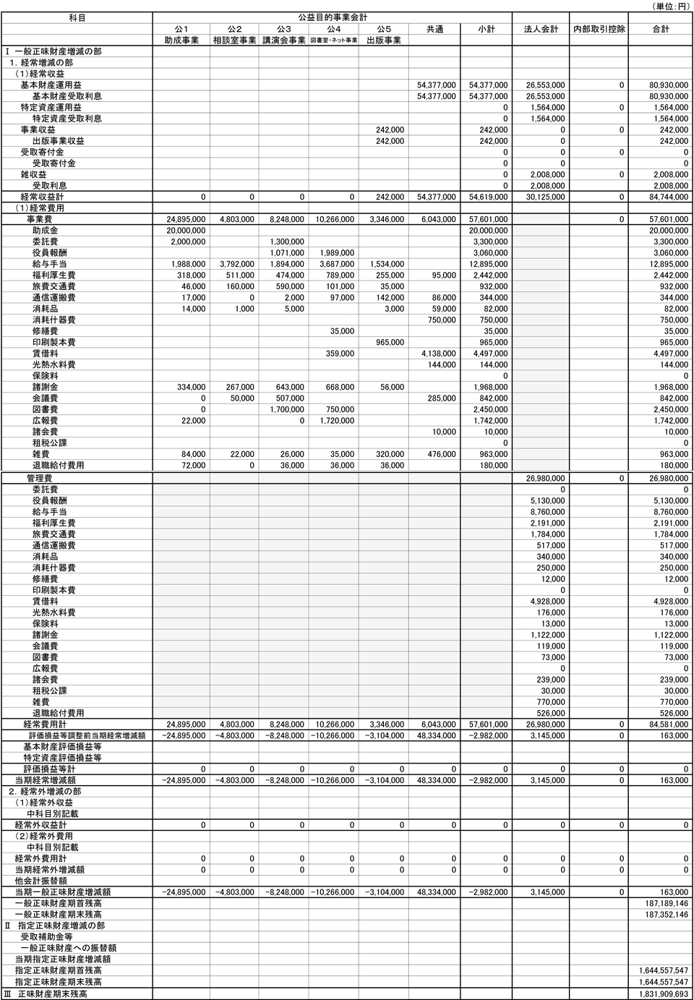

令和5年度の事業計画
(令和5年4月1日〜令和6年3月31日)
1.公益目的事業
| 番号 | 事業名 | 実施・開催 | 予算 (千円) | 事業内容 |
|---|---|---|---|---|
| 公1(1) | 研究・活動助成 | 8月 — | 24,895 | ・精神療法の研究や啓発活動に関する助成 ・委託研究「外来森田療法の治療効果研究」（6年目） |
| 公2(1) | 心の健康相談 | 毎日 月2回 | 4,364 | ・財団職員・委嘱相談員による電話・面接・メール相談 ・東京・大阪にて毎月各1回（45分間×4枠）の臨床心理士によるカウンセリングの実施 |
| 公2(2) | 心の体験フォーラム会員交流会 | 年2回 | 439 | ・交流サイト・心の体験フォーラム会員の交流会（1回当たり10名以内） |
| 公3(1) | 財団セミナー | 年1回 | 423 | ・誰でも参加できる無料の会場参加型のメンタルヘルスセミナー（関西圏で実施） |
| 公3(2) | 委託セミナー | 年4回 | 1,004 | ・各地の大学や団体に委託して行う無料のメンタルヘルスセミナー（関西圏以外で実施） |
| 公3(3) | その他のセミナー | 年20回 年1回 年1回 | 6,821 | ・心の健康ビデオセミナーの配信（オンラインorハイブリッド） ・大学に委託する教育向けセミナー（オンライン） ・働く人のためのメンタルヘルスセミナー（オンライン） |
| 公4(1) | 精神療法関係図書室 | — | 4,272 | ・専門図書室の運営並びに財団ホームページへの情報掲載 |
| 公4(2) | 心の体験フォーラムの運営 | — | 5,994 | ・不安症など心の健康に課題を持つ人を対象にした交流サイトの管理運営 |
| 公5(1) | 研究助成報告集 | 年1回 | 1,494 | ・研究助成事業の成果報告集の発刊 |
| 公5(2) | 機関紙 | 年1回 | 1,109 | ・森田療法や財団活動に関する刊行物 |
| 公5(3) | 精神療法関連資料の販売 | — | 743 | ・森田療法DVDや関連書籍の販売 |
| 共通費 | 共通 | 6,043 | ・家賃、リース料、光熱水料費、福利厚生費、通信費等 | |
| 合 計 | 57,601 | 令和4年度：56,171千円 | ||
※共益費：各事業に区分できない経費
※各事業予算には人件費も含まれている
※人件費は、役・職員の業務分担に応じて、事業費と管理費に分けて計上している
※経常経費に占める公益目的事業費の割合は68.1％である
2.管理業務一覧
公益事業を推進するために必要な間接業務は次のとおりです。
| 番号 | 業務名 | 実施・開催 | 予算 （千円） | 業務内容 |
|---|---|---|---|---|
| 1 | 理事会 | 3回 | 2,114 | オンライン通常理事会2回、書面決議臨時理事会1回 |
| 2 | 評議員会 | 1回 | 1,146 | オンライン定時評議員会1回 |
| 3 | 資産管理・ 運用委員会 | 8回 | 1,446 | 債券買替4回、運用報告等4回 |
| 4 | 公益認定等 委員会 | — | 595 | 定期提出2回・変更届1回 |
| 5 | 企画委員会 | 6回 | 2,280 | 企画会議6回、学会・研究会等情報収集活動 |
| 6 | その他 管理業務 | — | 19,399 | 人件費、家賃、リース料、光熱費、福利厚生費等 |
| 合 計 | 26,980 | 令和4年度:24,530千円 | ||
3.資金調達及び設備投資の見込みについて
令和5年度の資金調達及び重要な設備投資については予定していません。
令和5年度予算
(令和5年4月1日～令和6年3月31日)
1.令和5年度収支予算書(正味財産増減計算書)
| 科目 | 当年度 | 前年度 | 増減 | 前年度に対する 主な増減内容 |
|---|---|---|---|---|
| Ⅰ 一般正味財産 増減の部 | ||||
| 1.経常増減の部 | ||||
| （1）経常収益 | ||||
| ①基本財産運用益 | ||||
| 基本財産受取利息 | 80,930,000 | 76,782,000 | 4,148,000 | |
| ②特定資産受取利息 | ||||
| 特定資産受取利息 | 1,564,000 | 2,196,000 | -632,000 | |
| ③事業収益 | ||||
| 出版事業収益 | 242,000 | 605,000 | -363,000 | |
| ④受取寄付金 | ||||
| 受取寄付金 | 0 | 0 | 0 | |
| ⑤雑収益 | ||||
| 受取利息 | 2,008,000 | 1,415,000 | 593,000 | |
| 経常収益計 | 84,744,000 | 80,998,000 | 3,746,000 | |
| （2）経常費用 | ||||
| ①事業費 | 57,601,000 | 56,171,000 | 1,430,000 | |
| 助成金 | 20,000,000 | 20,000,000 | 0 | |
| 委託費 | 3,300,000 | 8,300,000 | -5,000,000 | 公1-1.委託研究費 -5,000,000円 |
| 役員報酬 | 3,060,000 | 2,980,000 | 80,000 | |
| 給与手当 | 12,895,000 | 8,461,000 | 4,434,000 | 相談員1名・相談員補佐1名加入 公益事務1名・委嘱相談員2名減 |
| 福利厚生費 | 2,442,000 | 1,297,000 | 1,145,000 | 相談員1名・相談員補佐1名加入、公益事務1名減 |
| 旅費交通費 | 932,000 | 621,000 | 311,000 | 相談員1名、相談員補佐1名通勤費 |
| 通信運搬費 | 344,000 | 259,000 | 85,000 | |
| 消耗品費 | 82,000 | 95,000 | -13,000 | |
| 消耗什器費 | 750,000 | 450,000 | 300,000 | 椅子20脚（公45:管55） -450,000円 パソコン6台（公75:管25） +900,000円 |
| 修繕費 | 35,000 | 170,000 | -135,000 | |
| 印刷製本費 | 965,000 | 895,000 | 70,000 | |
| 賃借料 | 4,497,000 | 4,312,000 | 185,000 | |
| 光熱水料費 | 144,000 | 135,000 | 9,000 | |
| 諸謝金 | 1,968,000 | 2,573,000 | -605,000 | 公2-1.心の健康相談カウンセラー謝金 -240,000円 公2-2.3-1.3-3.セミナー講師謝金 -300,000円 |
| 会議費 | 842,000 | 60,000 | 782,000 | 公2-2.体験フォーラム交流会貸会議室 +50,000円 公3-1.財団セミナー貸室料+ウェビナー追加費 +170,000円 公3-3.その他セミナー貸室料 +280,000円 Zoom使用料 +280,000円 |
| 図書費 | 2,450,000 | 1,550,000 | 900,000 | システム開発費 +700,000円 公3-3.ビデオセミナー配信用動画制作費 +300,000円 |
| 広報費 | 1,742,000 | 2,871,000 | -1,129,000 | 公3-1.財団セミナーDM代 -120,000円 公3-3.ビデオセミナーDM代 -470,000円 公5-3.森田療法セミナーDVD DM代 -170,000円 |
| 諸会費 | 10,000 | 10,000 | 0 | |
| 雑費 | 963,000 | 992,000 | -29,000 | |
| 退職給付費用 | 180,000 | 140,000 | 40,000 | |
| ②管理費 | 26,980,000 | 24,530,000 | 2,450,000 | |
| 役員報酬 | 5,130,000 | 5,050,000 | 80,000 | |
| 給与手当 | 8,760,000 | 7,499,000 | 1,261,000 | アルバイト勤務日数増 |
| 福利厚生費 | 2,191,000 | 1,919,000 | 272,000 | アルバイト勤務日数増 |
| 旅費交通費 | 1,784,000 | 460,000 | 1,324,000 | 国内学会旅費 +160,000円 国際学会旅費 +1,000,000円 |
| 通信運搬費 | 517,000 | 518,000 | -1,000 | |
| 消耗品 | 340,000 | 390,000 | -50,000 | |
| 消耗什器費 | 250,000 | 550,000 | -300,000 | 椅子20脚（公45:管55） -550,000円 パソコン6台（公75:管25） +300,000円 |
| 修繕費 | 12,000 | 12,000 | 0 | |
| 印刷製本費 | 0 | 4,000 | -4,000 | |
| 賃借料 | 4,928,000 | 4,928,000 | 0 | |
| 光熱水料費 | 176,000 | 165,000 | 11,000 | |
| 保険料 | 13,000 | 13,000 | 0 | |
| 諸謝金 | 1,122,000 | 1,122,000 | 0 | |
| 会議費 | 119,000 | 406,000 | -287,000 | Zoom使用料 -280,000円 |
| 図書費 | 73,000 | 69,000 | 4,000 | |
| 諸会費 | 239,000 | 152,000 | 87,000 | |
| 租税公課 | 30,000 | 30,000 | 0 | |
| 雑費 | 770,000 | 773,000 | -3,000 | |
| 退職給付費用 | 526,000 | 470,000 | 56,000 | |
| 経常費用計 | 84,581,000 | 80,701,000 | 3,880,000 | |
| 当期経常増 減額 | 163,000 | 297,000 | -134,000 | |
| 2.経常外増減の部 | ||||
| （1）経常外収益 | 0 | 0 | 0 | |
| 経常外収益計 | 0 | 0 | 0 | |
| （2）経常外費用 | 0 | 0 | 0 | |
| 経常外費用計 | 0 | 0 | 0 | |
| 当期経常外増減額 | 0 | 0 | 0 | |
| 当期一般正味財産 増減額 | 163,000 | 297,000 | -134,000 | |
| 一般正味財産 期首残高 | 187,189,146 | 162,275,960 | 24,913,186 | |
| 一般正味財産 期末残高 | 187,352,146 | 162,572,960 | 24,779,186 | |
| Ⅱ 指定正味財産 増減の部 | ||||
| 当期指定正味財産 増減額 | 0 | 0 | 0 | |
| 指定正味財産 期首残高 | 1,644,557,547 | 1,524,846,147 | 119,711,400 | |
| 指定正味財産 期末残高 | 1,644,557,547 | 1,524,846,147 | 119,711,400 | |
| Ⅲ 正味財産期末残高 | 1,831,909,693 | 1,687,419,107 | 144,490,586 |
2.令和5年度収支予算書内訳表（正味財産増減計算書）
令和5年4月1日〜令和6年3月31日まで

（注）貸借対照表内訳表の作成義務がないため、一般正味財産期首残高、一般正味財産期末残高、指定正味財産期首残高、指定正味財産期末残高及び正味財産期末残高は合計欄のみを記載している。